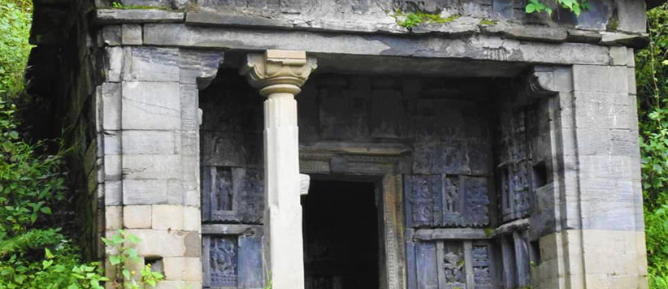
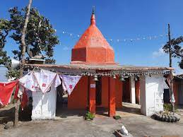
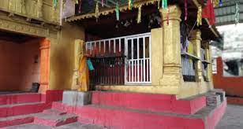
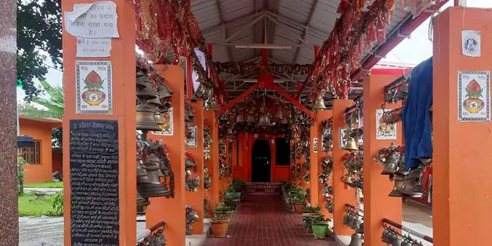
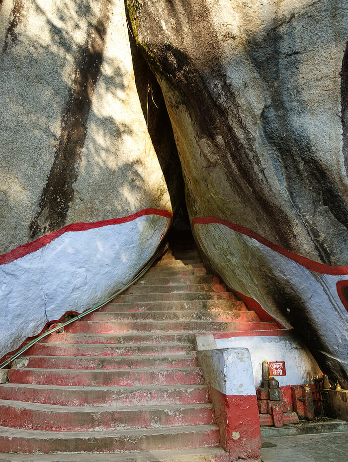
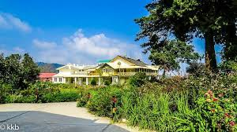

TEMPLES
Baleshwar Temple

The temple is situated in Baleshwar i.e 76 km from Pithoragarh within the city of Champawat in Uttarakhand. It is the most artistic temple of the area. Built by the rulers of Chand dynasty, Baleshwar Temple is a marvelous symbol of stone carving. The main Baleshwar temple is dedicated to Lord Shiva who is also known as Baleshwar. There are two other temples in the compound of Baleshwar, one dedicated to Ratneshwar and the other to Champawati Durga. The exteriors of these temples are carved with posters of local deities. For more click here
Banasur fort

An ironically constructed relic, on the name of a boon bestowed Banasur, the man with a thousand arms, whereas the fort gives an air of amourous nature, and is the perfect spot to watch the origins of Lohaghati river For more click here
Ek Hathya Naula
One of those structures, that is known not only because of its uniqueness, but also for its creators For more click here
Kranteshwar Temple
If you are of straying away from the usual mainstream tourist spots, you will choose Champawat For more click here
Nagnath Temple
The particular hilly towns of North India, worship Lord Shiva of the Hindu mythogy as their chief deity.It is believed that Shiva is the conqueror of death, an ddelivers all his devotees from every possible trouble and makes their life peaceful and successful For more click here
Golju Temple
Golu Devta is a deity of enormous significance in the area, and is known to deliver justice and instill faith in his populace as their ruler prince For more click here
Maa Barahi Temple
The cave temple is intriguing. The story behind 'Maa Barahi'is nice.A good place for religious people. The locals hold a fair during the festival of Rakhi. The surroundings are not very clean For more click here
Mayawati Temple
Mayavati Ashram or the Advaita Ashram, the dream land of Swami Vivekhand, the great world wide popular monk,philospher, a major force in the revival of Hinduism in the modern india For more click here